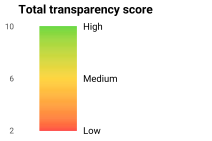
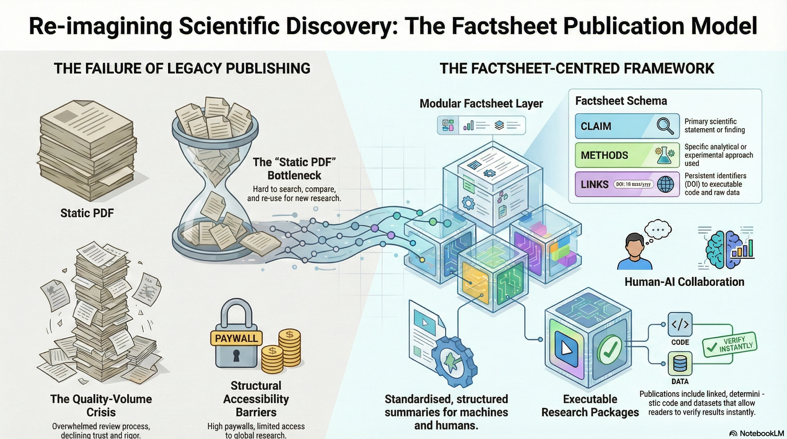

![]()
%%{init: {'theme': 'default', 'themeVariables': {'fontSize': '100px'}}}%%
flowchart LR
T["Transparency<br/>& Rigor"] -->|enables| R["Reproducibility"]
T -->|enables| RE["Replicability"]
R -->|"desired<br/>step"| RE
RE -->|"builds"| C["Scientific<br/>Credibility"]
R -->|"builds"| C
style T fill:#B85042,color:white,font-weight:bold
style R fill:#065A82,color:white,font-weight:bold
style RE fill:#2C5F2D,color:white,font-weight:bold
style C fill:#1E2761,color:white,font-weight:bold
Publications in 21st Century
Evaluating Reproducibility of Scientific Research
19 March 2026
Transparency in Science in the 21st century
Why Does This Matter?
Science advances through confirmation and self-correction.
When a scientific effort fails to independently confirm prior results, it can signal either:
- A lack of rigor in the original study, or
- An important precursor to new discovery
Understanding these concepts helps us design better research and evaluate existing work.
Report: Reproducibility and Replicability in Science (National Academies of Sciences, Engineering, and Medicine 2019)
Three Distinct Concepts
| Transparency / Rigor | Reproducibility | Replicability | |
|---|---|---|---|
| Core question | Is the process fully documented and well-designed? | Same data + same code → same results? | New data + similar methods → consistent results? |
| Focus | Research quality & openness | Computational verification | Scientific consistency |
| Scope | Entire research lifecycle | Single study (code & data) | Across studies |
Transparency & Rigor
Transparency = making clear:
- Whether the study was exploratory or confirmatory
- How data was collected and prepared
- Which analyses were planned vs. post-hoc
- The level of uncertainty in results
Rigor = strict application of the scientific method to ensure robust, unbiased experimental design, methodology, analysis, and reporting.
Three Distinct Concepts
Reproducibility
Obtaining same results by running the same code over same data as provided by the study’s authors
What it involves:
- Re-running the original analysis pipeline
- Using the same data, software, and parameters
- Verifying that outputs match the reported results
Key enablers: shared code, open data, containers (Docker), computational notebooks, version control
Replicability
Obtaining consistent results across studies aimed at answering the same scientific question, each with its own data.
What it involves:
- Independent data collection
- Similar (not identical) methods
- Testing whether findings hold across contexts
Important nuance: Even rigorous, well-conducted studies may fail to replicate — this is sometimes informative, not necessarily a failure.
How They Relate
- Transparency & Rigor underpin everything — without them, neither reproducibility nor replicability is achievable
- Reproducibility is the computational baseline — same data, same code, same results
- Replicability is the scientific goal — findings that hold across independent studies
- Together, they build confidence in scientific knowledge
AI Application to Evaluate Scientific Research
Scientific Reproducibility Index
Agentic AI for Automated Paper Validation
An automated system that reads, extracts, and generates code to validate the reproducibility of scientific papers.

- Read: AI agent ingests the full paper — text, figures, tables, and supplementary materials
- Extract: Identifies methodology, datasets, parameters, and expected results
- Generate Code: Produces executable reproduction scripts from extracted information
- Validate: Runs the code and compares outputs against published results to compute a reproducibility score
Reference: What is an MCP Server?
Transparency Score
A scoring method to assess research transparency
The table shows how transparency is scored by combining result type with data origin:
- Confirmatory results that can be verified from both the publication and own data receive the highest score
- Converging-consistent results verified only partially receive a medium score
- Diverging results that cannot be reproduced from either source receive the lowest score
- The sum of the results consistency based on publication and own data delivers a total transparency score
| Results | Data origin | Score | |
|---|---|---|---|
| Publication | Own | ||
| Confirmatory | Reproducibility | Replicability | 5 |
| Converging-consistent | Partial reproducibility | Partial replicability | 3 |
| Diverging | No reproducibility | No replicability | 1 |

Note: The transparency score is still under development
Testing the Evaluation Process
Steps of the Evaluation Process Applied in the Current Stage
- The evaluation process is still under development, therefore in the current presentation it was not possible to apply all the steps
- Based on the available information it was possible to reproduce the results; missing information would mean essentially replication of the results
- The transparency score was not applied at this stage as it requires further development to assess reproducibility and replicability
Source: Siegel et al. (2024)
Proof of Concept
Evaluating Transparency in Recent Transportation Studies
Testing Reproducibility and Replicability in Practice
To assess practical reproducibility, we selected two recent transportation studies.
Selection criteria
- Access to the published article
- Availability of the underlying dataset
- Availability of analysis code (when possible)
This allows us to evaluate different levels of reproducibility:
- Data reproducibility – can results be recreated from the data?
- Computational reproducibility – can results be reproduced using the original code?
The Two Publications
Study 1 - Revisiting Reproducibility in Transportation Simulation Studies
Authors: Kevin Riehl, Anastasios Kouvelas, Michail A. Makridis
Journal: European Transport Research Review (2025)
DOI: 10.1186/s12544-025-00718-9
Available resources
- Text
- Dataset
- Code
Reproduced the results by re-writing the code based on the scripts and methodology and using the provided dataset
Study 2 - Towards Zero CO2 Emissions: Insights from EU Vehicle On-Board Data
Authors: Jaime Suarez, Alessandro Tansini, Markos A. Ktistakis, Andres L. Marin, Dimitrios Komnos, Jelica Pavlovic, and Georgios Fontaras
Journal: Science of the Total Environment (2025)
DOI: 10.1016/j.scitotenv.2025.180454
Available resources
- Text
- Dataset
Attempted to reproduce, but essentially replicated the results by re-writing the code based on methodology and using the provided dataset
Paper Diagram - 1
Revisiting Reproducibility in Transportation Simulation Studies (Riehl, Kouvelas, and Makridis 2025)
%%{init: {'theme': 'default', 'themeVariables': {'fontSize': '25px'}}}%%
flowchart TD
Start([Revisiting Reproducibility in<br/>Transportation Simulation Studies]) --> JournalSel
subgraph DataCollection ["Data Collection Pipeline"]
JournalSel["Journal Selection<br/>Top 20 by h5-index"] --> APIAccess{"API<br/>Access?"}
APIAccess -->|"14 journals<br/>via ScienceDirect,<br/>Wiley, Taylor and Francis"| Retrieval["Article Retrieval<br/>2000 - Aug 2024"]
APIAccess -->|"6 excluded<br/>no API"| Excluded([Excluded])
Retrieval --> Corpus["Corpus: 46,015 Articles<br/>PDF, HTML, XML"]
Corpus --> Metadata["Metadata Enrichment<br/>CrossRef API: citations,<br/>authors, references"]
end
subgraph SimIdentification ["Simulation Study Identification"]
Metadata --> KeywordFilter{"Keyword simulat<br/>at least 5 times?"}
KeywordFilter -->|"Yes: 25.82%"| SimStudies["11,879 Simulation Studies<br/>33% of studies by 2024"]
KeywordFilter -->|"No: 74.18%"| NonSim["34,136 Non-Simulation Studies"]
end
subgraph RepoDiscovery ["Repository Discovery"]
SimStudies --> LinkExtract["Link Extraction<br/>GitHub, Zenodo, BitBucket,<br/>Mendeley, YouTube, etc."]
LinkExtract --> ManualReview["Manual Review<br/>2,388 links inspected"]
ManualReview --> ValidRepos["672 Valid Repositories<br/>Only 1.82% of simulation studies"]
end
ValidRepos --> Branch1
SimStudies --> Branch2
NonSim --> Branch2
ValidRepos --> Branch3
subgraph StatAnalysis ["Statistical Analysis"]
Branch2["Citation Comparison"] --> GroupTests["T-test, Mann-Whitney U,<br/>Kruskal-Wallis H"]
GroupTests --> SimCite["Simulation vs Non-Simulation<br/>4.39 vs 3.55 cites/year<br/>p < 0.001"]
GroupTests --> RepoCite["With vs Without Repository<br/>4.56 vs 4.39 cites/year<br/>p = 0.324 -- Not significant"]
SimCite --> Regression["Negative Binomial Regression<br/>11 model variants"]
RepoCite --> Regression
Regression --> RegResult["Repository has no<br/>significant citation impact<br/>Pseudo R2 up to 6.7%"]
end
subgraph QualityAssess ["Repository Quality Assessment"]
Branch1["Repository Scoring<br/>5-Level System"] --> L1["Level 1: Non-empty<br/>17.21%"]
Branch1 --> L2["Level 2: Multiple file types<br/>23.93%"]
Branch1 --> L3["Level 3: Basic README<br/>28.03%"]
Branch1 --> L4["Level 4: Reader-friendly docs<br/>18.36%"]
Branch1 --> L5["Level 5: Comprehensive<br/>12.46%"]
L1 --> QualResult["Average Quality: Level 2-3"]
L2 --> QualResult
L3 --> QualResult
L4 --> QualResult
L5 --> QualResult
QualResult --> Contents["Contents Found:<br/>Datasets 67.7%<br/>Source Code 64.8%<br/>Documentation 59.5%<br/>Models 39.8%<br/>Licenses 38.7%"]
Contents --> Languages["Languages:<br/>Python 48.9%<br/>Jupyter 19.5%<br/>R 16.5%<br/>Matlab 6.6%"]
end
subgraph Survey ["Researcher Survey"]
Branch3["87 Respondents<br/>27 Questions<br/>Nov - Dec 2024"] --> Perception["Perception:<br/>Reproducibility is significant<br/>issue: 4.11 / 5<br/>Need more transparency:<br/>4.51 / 5"]
Branch3 --> Barriers["Primary Barriers:<br/>Time constraints: 64%<br/>Legal issues: 54%<br/>Intentional withholding: 35%"]
Branch3 --> Support["Community Support:<br/>Publish models: 80%<br/>Publish source code: 78%<br/>Mandatory plans: 74%<br/>Already have strategies: 52%"]
end
RegResult --> Findings
Languages --> Findings
Perception --> Findings
Barriers --> Findings
Support --> Findings
subgraph KeyFindings ["Key Findings and Recommendations"]
Findings(["Convergence of Evidence"]) --> F1["Only 1.82% of simulation<br/>studies share repositories"]
Findings --> F2["No citation benefit from<br/>sharing code or data"]
Findings --> F3["Community recognizes the<br/>problem but faces barriers"]
F1 --> Rec["Recommendations"]
F2 --> Rec
F3 --> Rec
Rec --> R1["Mandatory reproducibility<br/>plans by funding agencies"]
Rec --> R2["Best-practice templates<br/>and repository guidelines"]
Rec --> R3["Professional standards for<br/>open-source in transportation"]
end
classDef startEnd fill:#E6E6FA,stroke:#333,stroke-width:2px,color:darkblue
classDef pipeline fill:#90EE90,stroke:#333,stroke-width:2px,color:darkgreen
classDef decision fill:#FFD700,stroke:#333,stroke-width:2px,color:black
classDef stat fill:#87CEEB,stroke:#333,stroke-width:2px,color:darkblue
classDef quality fill:#FFDAB9,stroke:#333,stroke-width:2px,color:#8B4513
classDef survey fill:#DDA0DD,stroke:#333,stroke-width:2px,color:#4B0082
classDef finding fill:#FFB6C1,stroke:#DC143C,stroke-width:2px,color:black
classDef rec fill:#98FB98,stroke:#2E7D2E,stroke-width:2px,color:darkgreen
classDef excluded fill:#D3D3D3,stroke:#999,stroke-width:1px,color:#666
class Start,Findings startEnd
class JournalSel,Retrieval,Corpus,Metadata,KeywordFilter,SimStudies,LinkExtract,ManualReview,ValidRepos pipeline
class APIAccess decision
class NonSim,Branch2,GroupTests,SimCite,RepoCite,Regression,RegResult stat
class Branch1,L1,L2,L3,L4,L5,QualResult,Contents,Languages quality
class Branch3,Perception,Barriers,Support survey
class F1,F2,F3 finding
class Rec,R1,R2,R3 rec
class Excluded excluded
Paper Diagram - 2
Towards Zero CO2 Emissions: Insights from EU Vehicle On-Board Data (Suarez et al. 2025)
%%{init: {'theme': 'default', 'themeVariables': {'fontSize': '25px'}}}%%
flowchart TD
%% ── DATA SOURCES ──────────────────────────────────────
subgraph SOURCES["Data Sources"]
direction LR
OBFCM["OBFCM Data<br/>7.7M passenger cars<br/>2021 - 2023"]
EEA["EEA CO2<br/>Monitoring DB<br/>Full new-vehicle registry"]
EURO["Eurostat<br/>Population density<br/>Weather / Infrastructure"]
VEH["Vehicle DBs<br/>Dimensions<br/>Transmission details"]
end
%% ── PREPROCESSING ─────────────────────────────────────
subgraph PREPROC["Preprocessing"]
MERGE["Merge and Augment<br/>OBFCM + EEA + Eurostat<br/>+ Vehicle databases"]
DEDUP["Deduplication<br/>Keep most recent<br/>entry per vehicle"]
OUTLIER["Outlier Filtering<br/>CO2_TA - 30 < CO2_RW < 3 x CO2_TA"]
FINAL["Final Dataset<br/>7.7M vehicles<br/>31% of total registrations"]
MERGE --> DEDUP --> OUTLIER --> FINAL
end
OBFCM --> MERGE
EEA --> MERGE
EURO --> MERGE
VEH --> MERGE
%% ── REAL-WORLD CALCULATIONS ───────────────────────────
subgraph RWCALC["Real-World Calculations"]
RWFC["RW Fuel Consumption<br/>Lifetime fuel / Lifetime distance"]
RWCO2["RW CO2 Emissions<br/>RW FC x Fuel conversion factor"]
EDS["Electric Driving Share<br/>Electric energy / Total energy<br/>PHEVs only"]
GAP["TA vs RW Gap<br/>Absolute: RW - TA g/km<br/>Relative: percent difference"]
RWFC --> RWCO2
RWCO2 --> GAP
EDS --> GAP
end
FINAL --> RWCALC
%% ── STATISTICAL METHODS ───────────────────────────────
subgraph STATS["Statistical Modelling"]
VIF["Variable Selection<br/>VIF < 5 threshold<br/>AIC stepwise selection"]
PRED["Predictors<br/>Mass / Power / Tyre radius<br/>Fuel / Year / Country<br/>Mileage / EDS"]
MLR["Multivariable Linear<br/>Regression - MLR<br/>Transparency for policy"]
LMG["Variance Decomposition<br/>LMG method<br/>R2 attribution per predictor"]
VIF --> MLR
PRED --> MLR
MLR --> LMG
end
RWCALC --> STATS
%% ── KEY RESULTS ───────────────────────────────────────
subgraph RESULTS["Key Results"]
direction TB
subgraph EF["RW Emission Factors - g/km"]
direction LR
ICEV["ICEV<br/>Petrol 166 / Diesel 170"]
HEV["HEV<br/>Petrol 149 / Diesel 190"]
PHEV["PHEV<br/>Petrol 131 / Diesel 150"]
end
subgraph GAPRES["TA vs RW Gap"]
direction LR
GAPICV["ICEV and HEV<br/>19 - 20% gap<br/>+25 to +32 g/km"]
GAPPHV["PHEV<br/>280 - 320% gap<br/>+98 to +117 g/km"]
end
subgraph FLEET["Total EU Fleet Emissions"]
direction LR
Y21["2021<br/>20.9 Mt"]
Y22["2022<br/>18.7 Mt"]
Y23["2023<br/>20.4 Mt"]
end
subgraph DRIVERS["Key Variability Drivers"]
direction LR
MASS["Vehicle Mass<br/>+15.2 g/km per<br/>100 kg - Petrol"]
POWER["Engine Power<br/>Primary driver<br/>ICEV and HEV"]
EDSD["Electric Driving<br/>Share - EDS<br/>51% of PHEV variance"]
end
end
STATS --> RESULTS
%% ── FLEET ESTIMATION ──────────────────────────────────
subgraph FLEST["Fleet-Level Estimation"]
REGMOD["Best Regression Models<br/>Applied to full EEA registry"]
STOCH["Stochastic Imputation<br/>Mileage + EDS from<br/>OBFCM distributions"]
AGG["Aggregation<br/>CO2 = Avg RW x Mileage x N<br/>/ 1e9 to Mt CO2"]
REGMOD --> STOCH --> AGG
end
EEA --> REGMOD
STATS --> REGMOD
AGG --> FLEET
%% ── PHEV INSIGHTS ─────────────────────────────────────
subgraph PHEVINS["PHEV-Specific Insights"]
direction LR
CHARGE["Users charge<br/>less than regs assume"]
MILES["PHEVs drive farther<br/>15,100 vs 11,600 km/yr"]
OPTRANGE["Optimal range<br/>~70 km electric<br/>yields ~100 g/km"]
end
GAPPHV --> PHEVINS
%% ── STYLES ────────────────────────────────────────────
classDef source fill:#87CEEB,stroke:#333,stroke-width:2px,color:#00008B
classDef preproc fill:#90EE90,stroke:#333,stroke-width:2px,color:#006400
classDef calc fill:#FFFACD,stroke:#333,stroke-width:2px,color:#333
classDef stats fill:#DDA0DD,stroke:#333,stroke-width:2px,color:#4B0082
classDef result fill:#FFD700,stroke:#333,stroke-width:2px,color:#333
classDef gap fill:#FFB6C1,stroke:#DC143C,stroke-width:2px,color:#333
classDef fleet fill:#98FB98,stroke:#2E7D32,stroke-width:2px,color:#006400
classDef phev fill:#B0E0E6,stroke:#4682B4,stroke-width:2px,color:#00008B
classDef driver fill:#FFDAB9,stroke:#FF8C00,stroke-width:2px,color:#333
class OBFCM,EEA,EURO,VEH source
class MERGE,DEDUP,OUTLIER,FINAL preproc
class RWFC,RWCO2,EDS,GAP calc
class MLR,VIF,LMG,PRED stats
class ICEV,HEV,PHEV,EF result
class GAPICV,GAPPHV gap
class Y21,Y22,Y23,REGMOD,STOCH,AGG fleet
class CHARGE,MILES,OPTRANGE phev
class MASS,POWER,EDSD driver
Comparison of Key Parameters
Study 1 - Revisiting Reproducibility in Transportation Simulation Studies
✔️ Transparency: All data were available to conduct the test
✔️ Reproducibility: Ran the code - did not use the environment
✔️ Replicability: Checked output results from text and code
Study 2 - Towards Zero CO2 Emissions: Insights from EU Vehicle On-Board Data
🧐️ Transparency: Code was missing and it was not possible to reproduce the results. Replicated from methodology with slight divergences; improvement in the description needed
❌ Reproducibility: No available code to run
✔️ Replicability: Re-created the code based on the text; missing details showed divergence
Method Evaluation and Benchmarking
Current State
Manual comparison of our results against published findings, assessing both numerical accuracy and reporting transparency.
Goal
A scalable, automated benchmarking pipeline across a large paper pool — with both AI and human reviewers reproducing code and results independently.
%%{init: {'theme': 'default', 'themeVariables': {'fontSize': '14px'}}}%%
flowchart TB
A[Paper Pool] --> B[Code Reproduction]
B --> C1[AI Reviewer]
B --> C2[Human Reviewer]
C1 --> D[Transparency Score]
C2 --> D
D --> E{Difficulties?}
E -- Yes --> F[Flag Issues]
E -- No --> G[Validated]
F --> H[AI & Human Collaboration]
H --> B
Conclusion & Next steps
Ideas and Next Steps
Next steps
- AI
- Develop fully the transparency scoring
- Expand the work on more papers
- Streamline and automate the process
- Benchmark the approach:
- Compare the AI evaluation with human reviews
- Identify steps that pose challenges
- Highlight strengths and weaknesses for each step between AI and humans
- Aim for a submission in NeurIPS → tentative deadline mid-July 2026
Ideas for the Future
- Work on the idea of interactive papers that communicate with each other using a machine layer

References
Booeshaghi, A. Sina, Laura Luebbert, and Lior Pachter. 2026. “Science Should Be Machine-Readable.” Scientific Communication and Education. https://doi.org/10.64898/2026.01.30.702911.
National Academies of Sciences, Engineering, and Medicine. 2019. Reproducibility and Replicability in Science. Washington, DC: The National Academies Press. https://doi.org/10.17226/25303.
Riehl, Kevin, Anastasios Kouvelas, and Michail A. Makridis. 2025. “Revisiting Reproducibility in Transportation Simulation Studies.” European Transport Research Review 17 (1): 22. https://doi.org/10.1186/s12544-025-00718-9.
Siegel, Zachary S., Sayash Kapoor, Nitya Nadgir, Benedikt Stroebl, and Arvind Narayanan. 2024. “CORE-Bench: Fostering the Credibility of Published Research Through a Computational Reproducibility Agent Benchmark.” Transactions on Machine Learning Research, September. https://openreview.net/forum?id=BsMMc4MEGS.
Suarez, Jaime, Alessandro Tansini, Markos A. Ktistakis, Andres L. Marin, Dimitrios Komnos, Jelica Pavlovic, and Georgios Fontaras. 2025. “Towards Zero CO2 Emissions: Insights from EU Vehicle on-Board Data.” Science of The Total Environment 1001 (October): 180454. https://doi.org/10.1016/j.scitotenv.2025.180454.